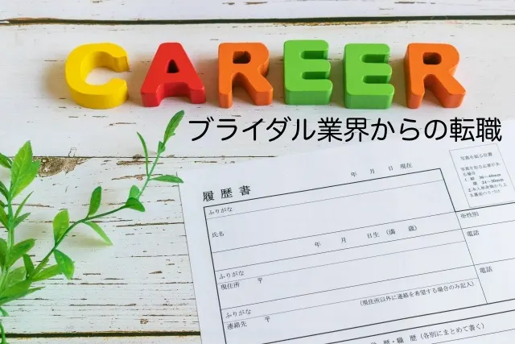

ウエディング業界のスキルが役に立つおすすめの転職先4選


「結婚式という幸せの舞台をプロデュースしたい！」という思いで就職したものの、ウエディング業界は、思ってた以上にキツイ業界だなぁと思っていませんか？ウエディング業界は「華やかな職場」というイメージをもっている人がほとんどです。憧れていた華やかな職場とのギャップを感じて、やめたいと思う人も少なくありません。
実は、筆者も10年間働いたウエディング業界から異業種へ転職しました。ウエディング業界をやめたいけど、今までの経験が生かせる仕事がわからないという人向けに「ウエディング業界の経験が役に立つおすすめの転職先」をご紹介します。
ウエディング業界の経験は転職に役に立つ
ウエディング業界での経験は違う業界でも通用します。現場職としてはウェディングプランナーが代表的ですが、裏方としては管理部門や施設管理などのバックオフィス業務です。このように、ウエディング業界の中にも職種がたくさんあります。どの職種においても、ウエディング業界で身についたホスピタリティ精神は、業界が変わっても十分活かすことが可能です。
どの職種でも扱う商品やサービスが違うだけで、基本となる部分は変わりません。特にウェディングプランナーは「形のないもの（価値観）を販売する」という、特殊な販売スタイルです。そのため、ウェディングプランナーの経験は営業に活かせます。
 まつお
まつお私の周りでも、ウェディングプランナーから
営業職に転職する人は多かったです。
広報や人事など事務方としてキャリアアップも可能です。
ウエディング業界で働くことで身につくスキル
ウエディング業界では、多くのスキルが身につきます。たとえば、以下のようなものです。
- スケジュール管理能力
- 状況適応能力
- 提案能力
- ビジネスマナー
- コミュニケーション能力
- ホスピタリティ
ひとつずつ見ていきましょう。
スケジュール管理能力
結婚式の段取りは、スケジュール調整、スケジュール管理が必須です。結婚式においては、徹底したスケジュール管理を要求されます
状況適応能力
結婚式では、トラブルが発生するすことが少なくありません。常に周りの状況を見て、関係部門と連携して問題を解決する柔軟性と状況適応能力が求められます。
提案能力
ウエディング業界では、気配りや相手のニーズを知る能力はもちろん、しっかりと提案出来る力が必要です。聞く力、コミュニケーション能力、提案能力も身に着ける事ができます。
ビジネスマナー
ウエディング業界では、接遇、礼儀やマナー、話し方はもちろん、挨拶や姿勢と言った立ち居振る舞いも重要です。特に高いレベルを求められるため、異業種でも役に立ちます。
コミュニケーション能力
結婚式では多くの人と接します。どのような相手でもコミュニケーションが取れる能力が必要です。
ホスピタリティ
お客様の満足度はホスピタリティで決まります。ホスピタリティ精神が身についていれば、お客様の喜びにつなげる事ができ、すべての仕事で役に立ちます。これらは他業界でも充分通用するスキルなので、中途採用市場では高く評価されていますよ。
ウエディング業界を辞めたい理由

憧れる人が多くて、人気の高いウエディング業界をなぜ辞めたいと思うのでしょうか。ウエディング業界は、なりたい職業でも上位にランクインすることも多いですが、実は離職率が高いとも言われています。筆者が相談を受けた中で多かった「やめたい理由」５つを紹介します。
- お客様の都合に振り回される
- クレームが多い
- 営業ノルマがある
- 土日祝日に休みが取れない
- 労働時間が長くて激務
該当する項目がないかチェックしてみてください
1. お客様の都合に振り回される
結婚式は数百万円の費用がかかる場合もあり、お客様が高い要求をしてくるケースも少なくありません。自分ひとりで、料理内容や招待人数、席の配置、引き出物など、打ち合わせをしなければならない内容がとても多く、自分が担当するお客様の数だけ打ち合わせが必要です。
時間をかけて決めても、急に「変更してほしい」と何度も変更を言われることも頻繁です。このようなことが続くと、お客様の応対をすることにストレスが溜まります。
まつお私の場合は、次第に、お客様の幸せを素直に喜べなくなりました。
2. クレームが多い
披露宴には思わぬトラブルがある場合もあります。音が出ない、照明がつかない、配膳ミスなど細かいミスは日常茶飯事です。筆者も数々のトラブルを経験してきました。エピソードの一例を紹介します。
新郎の親族に食物アレルギーの人がいました。打ち合わせの中で、その方だけは「別メニューを提供してほしい」との希望でした。担当者から事前に厨房スタッフと配膳責任者にも伝えていましたが、通常のメニューが提供されてしまったのです。当日は配膳の派遣スタッフが入ることになっていたため、派遣会社にも情報提供をしていましたがミスが起こりました。
厳密には派遣リーダーの責任ですが、お客様には関係ありません。後日とても強いお叱りを受け、支払いでもめてしまいました。場合によっては、訴訟問題になるような大きなクレームになる可能性もあります。たとえ、自分は直接悪くなくてもです。
3. 営業ノルマがある
ウエディング業界は、お客様に結婚式をしてもらい利益を出す仕事です。そのためには、結婚式を獲得しなければならず、獲得ノルマがあります。筆者がいた職場では、獲得グラフが貼り出され、成績が悪いと叱責されていました。
営業の手法としては、ブライダルフェアや試食会に来場したカップルへの提案営業です。「無事に成約できたら終わり」ではありません。当日までの打ち合わせをしていく中で、単価を上げるためにオプション営業をしていきます。たとえば、料理のグレードアップや追加の演出、高価な衣装などです。
自分の成績を上げるために、本心は必要がないと思っている追加オプションを提案することもありました。
まつおこれが特に嫌だという相談が多かったです。
4. 土日祝日に休みが取れない
一般的に、結婚式は土日や祝日に行われます。そのため、土日祝日はもちろん、ゴールデンウイークなどの大型連休は休みが取れません。友人との予定が合わず、だんだん声をかけてもらえなくなり疎遠になっていきました。このような不満を持っている人が多く、結婚や出産などで生活スタイルが変わるのを機に土日が休める会社に転職する人も少なくありません。
まつお筆者の場合はバックオフィス業務でしたが、ヘルプに入らなければならず、友達や家族との予定が合わない、イベントなどに行けないという不満がありました。
5. 労働時間が長くて激務
お客様は自分たちの都合で来館されます。閉館ギリギリに来館された場合は、閉館時間を過ぎても応対するため、なかなか帰宅できず残業になる場合もしょっちゅうです。内覧や契約はもちろん、結婚式当日は新郎新婦のお出迎えから運営・進行まで関わるためとても激務です。
自分が担当するお客様の披露宴が一日に数回ある場合もあり、ワークライフバランスが非常に取りづらい環境です。
ウエディング業界からおすすめの転職先4選

ウエディング業界で培ったスキルは、異業種でも十分に活かすことが可能です。ウエディング業界出身者は、ビジネスマナーやホスピタリティを持ち合わせているため、企業が求めている人物像にに当てはまることから高く評価されています。ウエディング業界でのスキルを生かせる業界を4つご紹介します。
- ホテル業界
- 教育業界
- 葬儀業界
- 人材業界
転職を考えている人は参考にしてみてください。
1. ホテル業界
ホテル業界は、ウエディング業界での経験が最も生かせる業界です。ホテルは非日常の空間と時間を提供し、お客様は満足度の対価として料金を払います。そのため、満足度が高ければ「料金が安い」、満足度が低ければ「料金が高い」という評価になります。ここで生かされるのが「形のないものを販売する」ウエディング業界でのスキルです。
結婚式同様、主役であるお客様にとって「最高の一日となるサービスの提供」を行うという点は、ウエディング業界と全く同じです。ホテルには以下のような職種があります。
- ドアマン
- ベル係
- フロント
- コンシェルジュ
- ハウスキーピング
- ルームサービス
- 宴会スタッフ
- その他（バックオフィスなど）
全ての職種でホスピタリティ精神が最も重要です。ホテルでは、結婚式以外にもパーティーや研修会なども行われるため、さらに高いレベルの接客技術やマナーが身につきます。ウエディング業界での接客スキルや、ホスピタリティ精神が身についているので、ホテル業界への転職にはかなり有利です。
転職理由として、以下のように伝えると説得力があります。
「ウエディング業界でホスピタリティと接客技術が身につきました。
しかし、プロとしてより高いレベルのおもてなしを身につけたいと思っています。
そのために、業務の幅を広げ、ウエディング以外の接客スキルを学べる環境で働きたいと思いました。」
ホテル業界への転職は、パーティや会議なども行う大型ホテルかリゾートホテルを選びましょう。ビジネスホテルは宿泊がメインのためおすすめしません。ホテル業界で働くなら、語学力も身につけておくとさらに仕事の幅が広がります。
まつお語学力が身につけば、外資系ホテルへの転職も可能です。
2. 教育業界
ウエディング業界から教育業界への転職もおすすめです。具体的には、ブライダル専門学校やホテル専門学校です。講師として、ブライダル業界の資格取得や就職を目指す学校生に授業を行う仕事です。長い時間、資格の取得やスキル習得のために生徒に寄り添います。
ウエディングプランナーや介添人と共通する部分が多く、スキルが発揮できる業界です。転職理由として、以下のように伝えると説得力があります。
「私が後輩の指導をしていく中で、最高の接客業に熱い情熱を持って入社してくる新人を目にしてきました。
彼らにおもてなしの魅力を伝えることで、もっと興味を持つ学生が増えれば業界の発展にもつながると思っております。
ウエディング業界の発展に人材育成という面から貢献できる、大きなやりがいのある仕事をしたいと思い転職を決意しました」
教育業界で指導者としての立場で、ウエディング業界に関われます。専門学校では、有名ホテルなどで働いた経験のある講師がいる場合も多く、自分自身も学べるのでとても大きなメリットですね。
3. 葬儀業界
生と死という相反する業界ですが、ホスピタリティが重要という面においてもウエディング業界と変わりありません。葬儀社の仕事はウエディングプランナーと全く同じです。まずは遺族と打ち合わせを行い、葬儀の進行や祭壇のグレード、香典返しの商品などを決めていきます。
営業ノルマがあり、祭壇のグレードアップなどで単価を上げ売上金額を競います。営業手法は同じなので、ウエディングプランナーの経験がある人は有利です。葬儀も結婚式同様、人の人生に関わる仕事でウエディング業界と似ている点がいくつもあります。
- 形のないものを販売する
- 人生最大のイベントをサポートする
- 遺族に寄り添いながら、真心をこめて自分の仕事をする（ホスピタリティ）
- 葬儀も必ずしも予定通りにはいかない（判断力）
- 担当者・司会者・会場設置担当などとの協力が必要（チームワーク）
転職理由として、以下のように伝えると説得力があります。
「ご遺族が故人と向き合う最後の時間を演出する葬儀の仕事は、とても重みのある仕事だと思っています。
葬儀業界は、ウエディング業界と通じるものがあり、故人との最後のお別れの時間をサポートする経験を積むことで、喜びと悲しみ両方の気持ちがわかる接客を身につけることができると思います。葬儀に携わることで、さらなるホスピタリティの向上をしたいと思い転職を決意しました」
厳粛なセレモニーなので参列者も多く、ビジネスマナーは必須です。ミスが許されず冷静な仕事を求められるため、ウエディング業界で身についたスキルが活かせます。
4. 人材業界
人材業界もウエディング業界のスキルが生きる業界のひとつです。特にコーディネーターは、対人コミュニケーション能力や、提案力、調整力が問われます。人材業界が扱う商品も「形のないもの」で、新郎新婦同様に長いお付き合いをしなければなりません。
「希望を聞いて適職をマッチングする」という点が、ウエディングプランナーによく似ています。転職理由として、以下のように伝えると説得力があります。
「私はこれまでお客様に寄り添い、最適な提案をする仕事に携わってきました。
一人ひとりのニーズに合ったものをマッチングするには、お客様に寄り添うことがもっとも大切だとウエディング業界で学びました。
就職は人生の選択というとても重要な場面であり、今まで以上のお客様との信頼関係が必要とされると思っています。
お客様に寄り添い、人生の選択という大切なお仕事のサポートをすることで、今まで以上に人間力が習得できると思い転職を決意しました」
お客様の要望を聞き出して、提案を行う営業力とコミュニケーション力が必要とされる仕事です。
まつおウエディングプランナーのスキルを生かせますね。
ウエディング業界からの転職必勝のコツ3選
ウエディング業界で働いている人は、さまざまなスキルが身につきます。身についたスキルを転職で活かす「転職成功のコツ」を紹介します。コツは次の3つです。
- 研修制度や教育制度が充実している企業を選ぶ
- 最低限のPCスキルを身につけておく
- 転職エージェントを使う
ぜひ実践してみてください。
1. 研修制度や教育制度が充実している企業を選ぶ
中途採用で異業種に転職した場合、これまでのスキルや経験だけでは不十分です。ビジネスマナーや接客力や営業力などはウエディング業界で身についていますが、転職先の業界知識はありません。どの企業にも入社後の研修はありますが、研修制度がいい加減だと現場に出てからもうまくいかず結局長く続けられなくなります。
このようなことを避けるためにも、研修制度が整った企業をおすすめします。研修だけに頼らず、自分で積極的な学習も必要です。企業のホームページや求人票に記載があるので「研修制度あり」などの記載があるものを中心に見ていきましょう。
2. 最低限のPCスキルを身につけておく
ウエディング業界にいるとあまり感じませんが、ウエディング業界は他の業界に比べるとデジタル化が遅れている業界です。会場の雰囲気や料理の試食、衣装の試着など実際に感じてもらうことで成約に結びつけるため、仕事でPCを使う場面は少ないケースがあります。
飲食などのサービス業界や、PCスキルが不要な業界なら問題ありませんが、特に事務職や営業職へ転職する場合のPCスキルは必須です。とくに、エクセルやワードは使っていても「パワーポイントは使った経験がない」人も多く、営業用のプレゼン資料を作るのにとても苦労するケースもあるでしょう。
余裕があれば「ワード」「エクセル」「パワーポイント」はPCスクールに通ってでも身につけておいたほうがよいでしょう。失業保険を受給中の人は、ハローワークの職業訓練の利用もおすすめですよ。
3. 転職エージェントを使う
ウエディング業界はどちらかというと「待ち」の営業であるため、館内から出る機会が少なく異業種の人との関わりが少ない業界です。また、営業する相手が法人ではないので、取引先を通じた紹介などが受けにくい特徴があります。ハローワークや求人サイトなどで求人を探してもなかなか見つからない、どのような会社なのかよくわからない人は転職エージェントの利用をおすすめします。
アデコの転職支援サービスは、自分の希望条件に合った企業をマッチングしてくれるサービスです。履歴書や職務経歴書の添削や面接指導も受けられます。担当のキャリアアドバイザーが企業との間に入ってくれるため、面接の日程調整や条件交渉も全て任せれるので効率よく転職活動が可能です。
無料なのでぜひ登録してみてください。
退職するときに守るべき5つのこと
最後に、退職する際に守るべき5つのポイントを押さえておきましょう。ウエディング業界はお客様とお付き合いをする期間が長く、結婚式後も関係が続く場合も少なくありません。ために退職の際にはトラブルに発展する可能性もあります。退職する時には、会社にもお客様にも迷惑がかからないようにすることが大切です。
- できるだけお客様の披露宴が終わるまで責任を持つ
- オンシーズンを考慮した上で退職日を決める
- 引き継ぎする期間が十分に取れているかを考える
- 担当途中で退職する場合は、お客様に後任者を紹介して引き継ぐ
- お客様への退職の挨拶はなるべく直接対面でおこなう
以上を守って、円満退職を目指しましょう。
採用・人事やAI活用のご相談を受け付けています
AI研修、AI導入支援、採用支援、記事の執筆など、まずはお気軽にご相談ください。
ご相談はこちら